2022 Advanced Higher Chemistry marking instructions
Source: Scottish Qualifications Authority (SQA) / Qualifications Scotland. This is a StemInteract HTML companion, not an official HTML edition. Selectable text is supplied alongside original page images. Use the images or original PDF for equations, powers, fractions, vector notation, tables and diagrams; text extraction cannot fully preserve mathematical layout.
Jump to a question
PDF page 1
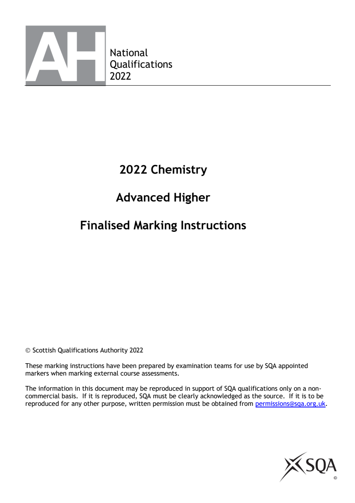
Selectable page text
National
Qualifications
2022
2022 Chemistry
Advanced Higher
Finalised Marking Instructions
© Scottish Qualifications Authority 2022
These marking instructions have been prepared by examination teams for use by SQA appointed
markers when marking external course assessments.
The information in this document may be reproduced in support of SQA qualifications only on a non-
commercial basis. If it is reproduced, SQA must be clearly acknowledged as the source. If it is to be
reproduced for any other purpose, written permission must be obtained from permissions@sqa.org.uk.PDF page 2
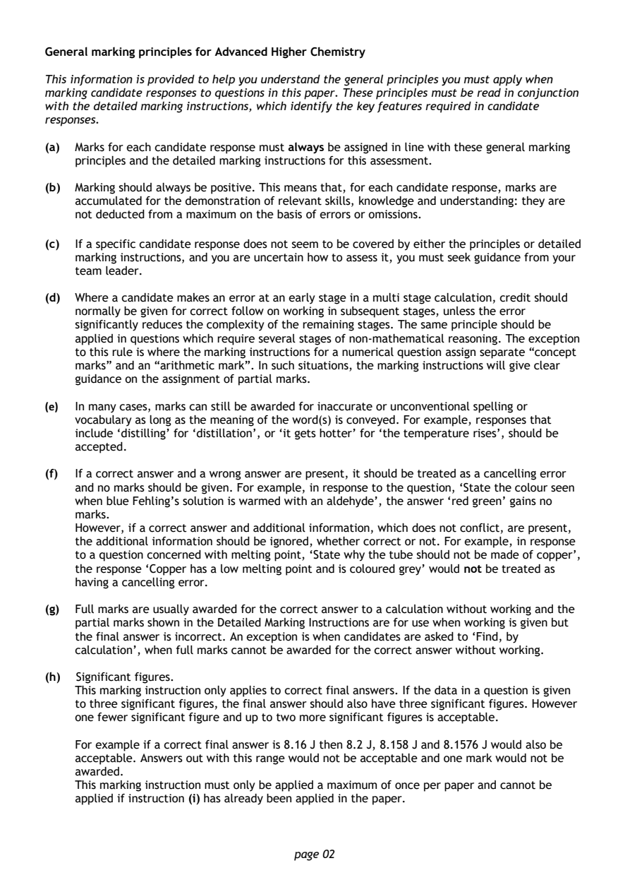
Selectable page text
General marking principles for Advanced Higher Chemistry
This information is provided to help you understand the general principles you must apply when
marking candidate responses to questions in this paper. These principles must be read in conjunction
with the detailed marking instructions, which identify the key features required in candidate
responses.
(a) Marks for each candidate response must always be assigned in line with these general marking
principles and the detailed marking instructions for this assessment.
(b) Marking should always be positive. This means that, for each candidate response, marks are
accumulated for the demonstration of relevant skills, knowledge and understanding: they are
not deducted from a maximum on the basis of errors or omissions.
(c) If a specific candidate response does not seem to be covered by either the principles or detailed
marking instructions, and you are uncertain how to assess it, you must seek guidance from your
team leader.
(d) Where a candidate makes an error at an early stage in a multi stage calculation, credit should
normally be given for correct follow on working in subsequent stages, unless the error
significantly reduces the complexity of the remaining stages. The same principle should be
applied in questions which require several stages of non-mathematical reasoning. The exception
to this rule is where the marking instructions for a numerical question assign separate “concept
marks” and an “arithmetic mark”. In such situations, the marking instructions will give clear
guidance on the assignment of partial marks.
(e) In many cases, marks can still be awarded for inaccurate or unconventional spelling or
vocabulary as long as the meaning of the word(s) is conveyed. For example, responses that
include ‘distilling’ for ‘distillation’, or ‘it gets hotter’ for ‘the temperature rises’, should be
accepted.
(f) If a correct answer and a wrong answer are present, it should be treated as a cancelling error
and no marks should be given. For example, in response to the question, ‘State the colour seen
when blue Fehling’s solution is warmed with an aldehyde’, the answer ‘red green’ gains no
marks.
However, if a correct answer and additional information, which does not conflict, are present,
the additional information should be ignored, whether correct or not. For example, in response
to a question concerned with melting point, ‘State why the tube should not be made of copper’,
the response ‘Copper has a low melting point and is coloured grey’ would not be treated as
having a cancelling error.
(g) Full marks are usually awarded for the correct answer to a calculation without working and the
partial marks shown in the Detailed Marking Instructions are for use when working is given but
the final answer is incorrect. An exception is when candidates are asked to ‘Find, by
calculation’, when full marks cannot be awarded for the correct answer without working.
(h) Significant figures.
This marking instruction only applies to correct final answers. If the data in a question is given
to three significant figures, the final answer should also have three significant figures. However
one fewer significant figure and up to two more significant figures is acceptable.
For example if a correct final answer is 8.16 J then 8.2 J, 8.158 J and 8.1576 J would also be
acceptable. Answers out with this range would not be acceptable and one mark would not be
awarded.
This marking instruction must only be applied a maximum of once per paper and cannot be
applied if instruction (i) has already been applied in the paper.
page 02PDF page 3
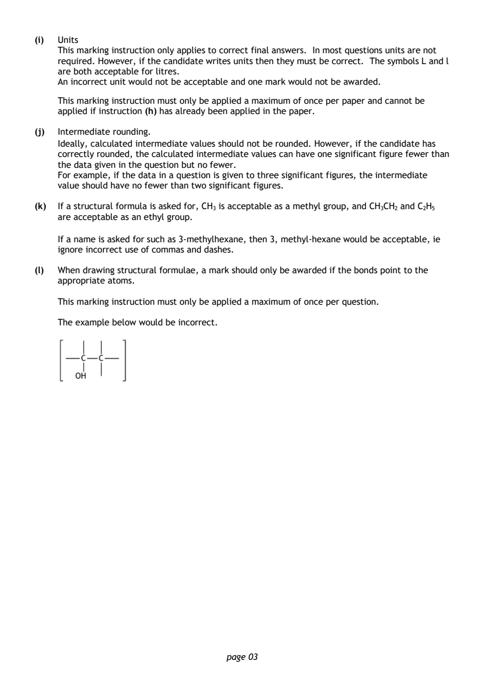
Selectable page text
(i) Units
This marking instruction only applies to correct final answers. In most questions units are not
required. However, if the candidate writes units then they must be correct. The symbols L and l
are both acceptable for litres.
An incorrect unit would not be acceptable and one mark would not be awarded.
This marking instruction must only be applied a maximum of once per paper and cannot be
applied if instruction (h) has already been applied in the paper.
(j) Intermediate rounding.
Ideally, calculated intermediate values should not be rounded. However, if the candidate has
correctly rounded, the calculated intermediate values can have one significant figure fewer than
the data given in the question but no fewer.
For example, if the data in a question is given to three significant figures, the intermediate
value should have no fewer than two significant figures.
(k) If a structural formula is asked for, CH₃ is acceptable as a methyl group, and CH₃CH₂ and C₂H₅
are acceptable as an ethyl group.
If a name is asked for such as 3-methylhexane, then 3, methyl-hexane would be acceptable, ie
ignore incorrect use of commas and dashes.
(l) When drawing structural formulae, a mark should only be awarded if the bonds point to the
appropriate atoms.
This marking instruction must only be applied a maximum of once per question.
The example below would be incorrect.
page 03PDF page 4
Paper 1, Question 1Paper 1, Question 2Paper 1, Question 3Paper 1, Question 4Paper 1, Question 5Paper 1, Question 6Paper 1, Question 7Paper 1, Question 8Paper 1, Question 9Paper 1, Question 10Paper 1, Question 11Paper 1, Question 12Paper 1, Question 13Paper 1, Question 14Paper 1, Question 15Paper 1, Question 16Paper 1, Question 17Paper 1, Question 18Paper 1, Question 19Paper 1, Question 20Paper 1, Question 21Paper 1, Question 22Paper 1, Question 23Paper 1, Question 24Paper 1, Question 25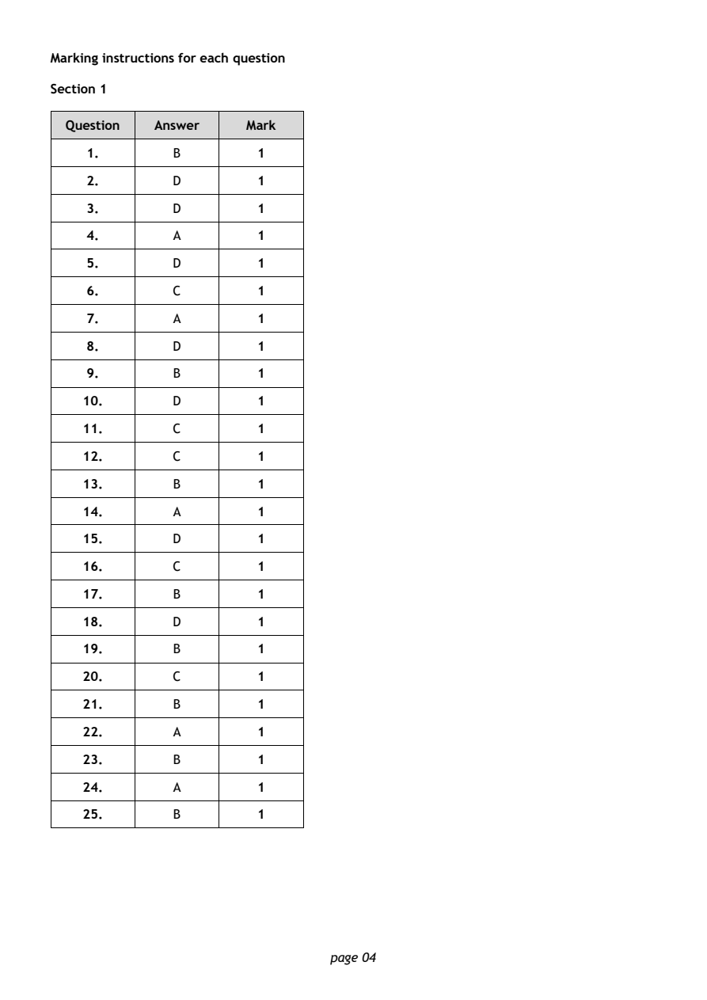
Selectable page text
Marking instructions for each question
Section 1
Question Answer Mark
1. B 1
2. D 1
3. D 1
4. A 1
5. D 1
6. C 1
7. A 1
8. D 1
9. B 1
10. D 1
11. C 1
12. C 1
13. B 1
14. A 1
15. D 1
16. C 1
17. B 1
18. D 1
19. B 1
20. C 1
21. B 1
22. A 1
23. B 1
24. A 1
25. B 1
page 04PDF page 5
Paper 2, Question 1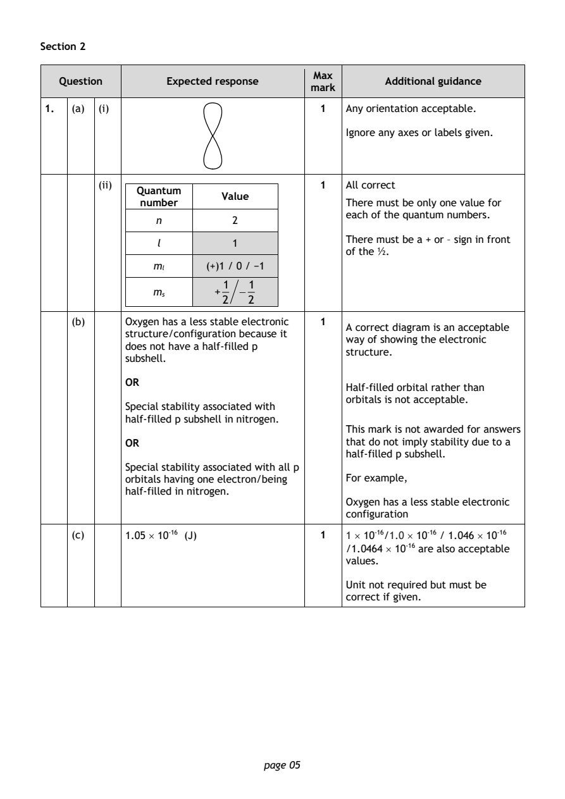
Selectable page text
Section 2
Max
Question Expected response Additional guidance
mark
1. (a) (i) 1 Any orientation acceptable.
Ignore any axes or labels given.
(ii) 1 All correct
Quantum
Value
number There must be only one value for
each of the quantum numbers.
n 2
There must be a + or – sign in front
l 1
of the ½.
m (+)1 / 0 / −1
l
1 1
m + −
s
2 2
(b) Oxygen has a less stable electronic 1
A correct diagram is an acceptable
structure/configuration because it
way of showing the electronic
does not have a half-filled p
structure.
subshell.
OR
Half-filled orbital rather than
orbitals is not acceptable.
Special stability associated with
half-filled p subshell in nitrogen.
This mark is not awarded for answers
OR that do not imply stability due to a
half-filled p subshell.
Special stability associated with all p
orbitals having one electron/being For example,
half-filled in nitrogen.
Oxygen has a less stable electronic
configuration
(c) 1.05 × 10⁻¹⁶ (J) 1 1 × 10⁻¹⁶/1.0 × 10⁻¹⁶ / 1.046 × 10⁻¹⁶
/1.0464 × 10⁻¹⁶ are also acceptable
values.
Unit not required but must be
correct if given.
page 05PDF page 6
Paper 2, Question 2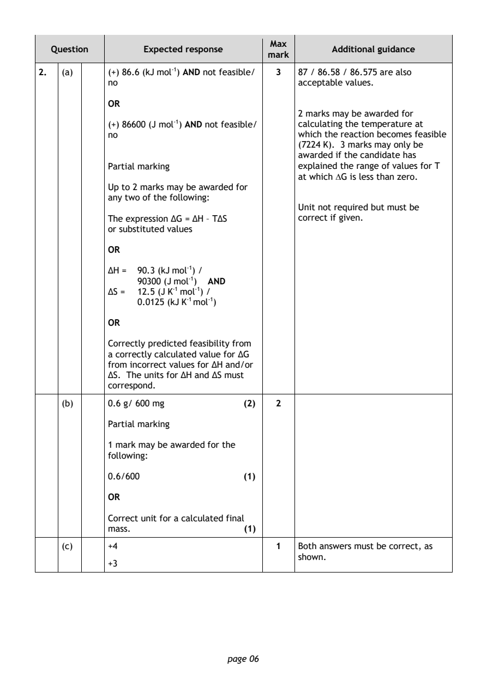
Selectable page text
Max
Question Expected response Additional guidance
mark
2. (a) (+) 86.6 (kJ mol⁻¹) AND not feasible/ 3 87 / 86.58 / 86.575 are also
no acceptable values.
OR
2 marks may be awarded for
(+) 86600 (J mol⁻¹) AND not feasible/ calculating the temperature at
no which the reaction becomes feasible
(7224 K). 3 marks may only be
awarded if the candidate has
Partial marking explained the range of values for T
at which ∆G is less than zero.
Up to 2 marks may be awarded for
any two of the following:
Unit not required but must be
The expression ΔG = ΔH – TΔS correct if given.
or substituted values
OR
ΔH = 90.3 (kJ mol⁻¹) /
90300 (J mol⁻¹) AND
ΔS = 12.5 (J K⁻¹ mol⁻¹) /
0.0125 (kJ K⁻¹ mol⁻¹)
OR
Correctly predicted feasibility from
a correctly calculated value for ΔG
from incorrect values for ΔH and/or
ΔS. The units for ΔH and ΔS must
correspond.
(b) 0.6 g/ 600 mg (2) 2
Partial marking
1 mark may be awarded for the
following:
0.6/600 (1)
OR
Correct unit for a calculated final
mass. (1)
(c) +4 1 Both answers must be correct, as
shown.
+3
page 06PDF page 7
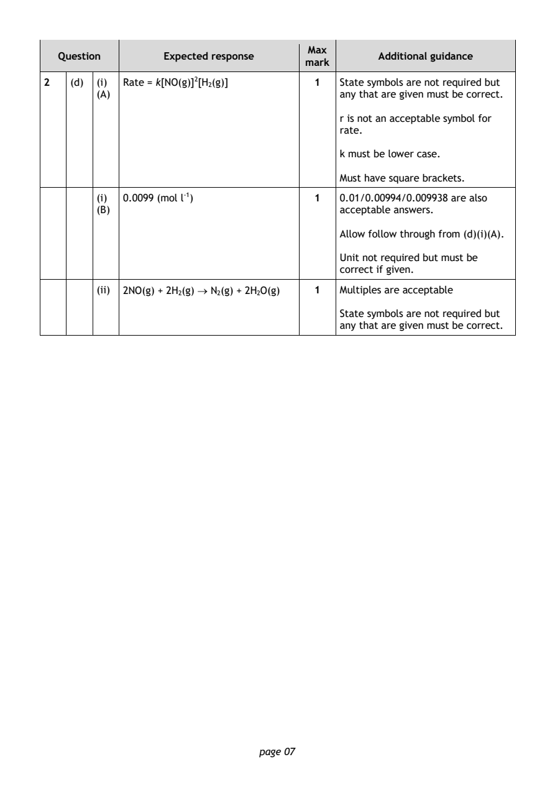
Selectable page text
Max
Question Expected response Additional guidance
mark
2 (d) (i) Rate = k[NO(g)]²[H₂(g)] 1 State symbols are not required but
(A) any that are given must be correct.
r is not an acceptable symbol for
rate.
k must be lower case.
Must have square brackets.
(i) 0.0099 (mol l⁻¹) 1 0.01/0.00994/0.009938 are also
(B) acceptable answers.
Allow follow through from (d)(i)(A).
Unit not required but must be
correct if given.
(ii) 2NO(g) + 2H₂(g) → N₂(g) + 2H₂O(g) 1 Multiples are acceptable
State symbols are not required but
any that are given must be correct.
page 07PDF page 8
Paper 2, Question 3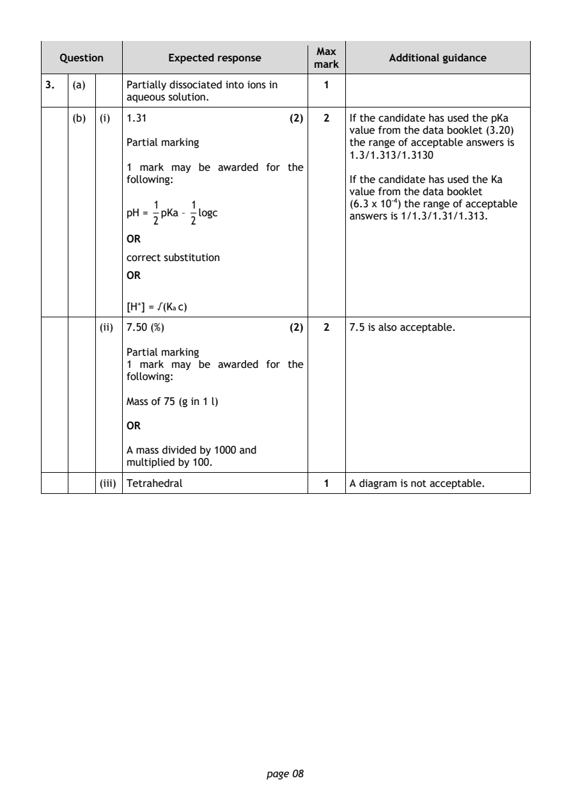
Selectable page text
Max
Question Expected response Additional guidance
mark
3. (a) Partially dissociated into ions in 1
aqueous solution.
(b) (i) 1.31 (2) 2 If the candidate has used the pKa
value from the data booklet (3.20)
Partial marking the range of acceptable answers is
1.3/1.313/1.3130
1 mark may be awarded for the
following: If the candidate has used the Ka
value from the data booklet
1 1 (6.3 x 10⁻⁴) the range of acceptable
pH = pKa – logc
answers is 1/1.3/1.31/1.313.
2 2
OR
correct substitution
OR
[H⁺] = √(K c)
a
(ii) 7.50 (%) (2) 2 7.5 is also acceptable.
Partial marking
1 mark may be awarded for the
following:
Mass of 75 (g in 1 l)
OR
A mass divided by 1000 and
multiplied by 100.
(iii) Tetrahedral 1 A diagram is not acceptable.
page 08PDF page 9
Paper 2, Question 4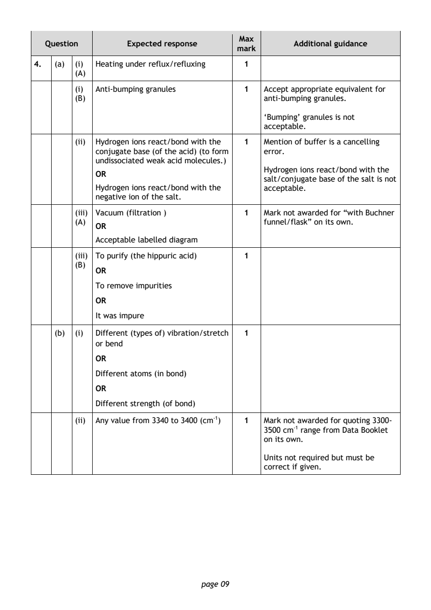
Selectable page text
Max
Question Expected response Additional guidance
mark
4. (a) (i) Heating under reflux/refluxing 1
(A)
(i) Anti-bumping granules 1 Accept appropriate equivalent for
(B) anti-bumping granules.
‘Bumping’ granules is not
acceptable.
(ii) Hydrogen ions react/bond with the 1 Mention of buffer is a cancelling
conjugate base (of the acid) (to form error.
undissociated weak acid molecules.)
Hydrogen ions react/bond with the
OR
salt/conjugate base of the salt is not
Hydrogen ions react/bond with the acceptable.
negative ion of the salt.
(iii) Vacuum (filtration ) 1 Mark not awarded for “with Buchner
(A) funnel/flask” on its own.
OR
Acceptable labelled diagram
(iii) To purify (the hippuric acid) 1
(B)
OR
To remove impurities
OR
It was impure
(b) (i) Different (types of) vibration/stretch 1
or bend
OR
Different atoms (in bond)
OR
Different strength (of bond)
(ii) Any value from 3340 to 3400 (cm⁻¹) 1 Mark not awarded for quoting 3300-
3500 cm⁻¹ range from Data Booklet
on its own.
Units not required but must be
correct if given.
page 09PDF page 10
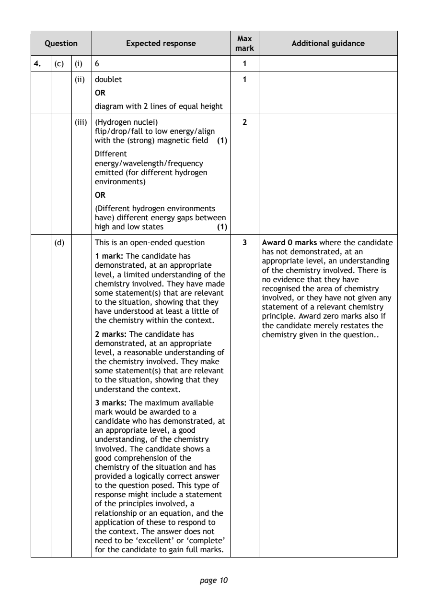
Selectable page text
Max
Question Expected response Additional guidance
mark
4. (c) (i) 6 1
(ii) doublet 1
OR
diagram with 2 lines of equal height
(iii) (Hydrogen nuclei) 2
flip/drop/fall to low energy/align
with the (strong) magnetic field (1)
Different
energy/wavelength/frequency
emitted (for different hydrogen
environments)
OR
(Different hydrogen environments
have) different energy gaps between
high and low states (1)
(d) This is an open-ended question 3 Award 0 marks where the candidate
has not demonstrated, at an
1 mark: The candidate has
appropriate level, an understanding
demonstrated, at an appropriate
of the chemistry involved. There is
level, a limited understanding of the
no evidence that they have
chemistry involved. They have made
recognised the area of chemistry
some statement(s) that are relevant
involved, or they have not given any
to the situation, showing that they
statement of a relevant chemistry
have understood at least a little of
principle. Award zero marks also if
the chemistry within the context.
the candidate merely restates the
2 marks: The candidate has chemistry given in the question..
demonstrated, at an appropriate
level, a reasonable understanding of
the chemistry involved. They make
some statement(s) that are relevant
to the situation, showing that they
understand the context.
3 marks: The maximum available
mark would be awarded to a
candidate who has demonstrated, at
an appropriate level, a good
understanding, of the chemistry
involved. The candidate shows a
good comprehension of the
chemistry of the situation and has
provided a logically correct answer
to the question posed. This type of
response might include a statement
of the principles involved, a
relationship or an equation, and the
application of these to respond to
the context. The answer does not
need to be ‘excellent’ or ‘complete’
for the candidate to gain full marks.
page 10PDF page 11
Paper 2, Question 5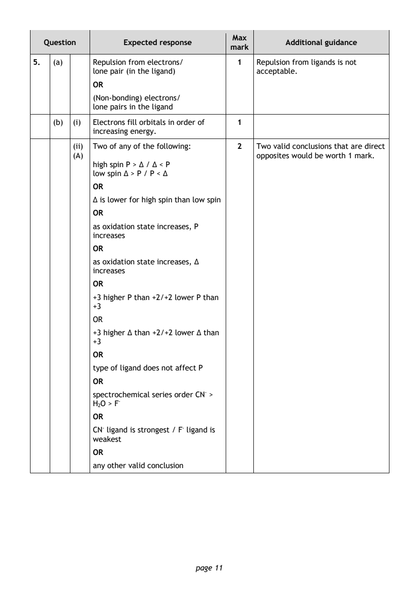
Selectable page text
Max
Question Expected response Additional guidance
mark
5. (a) Repulsion from electrons/ 1 Repulsion from ligands is not
lone pair (in the ligand) acceptable.
OR
(Non-bonding) electrons/
lone pairs in the ligand
(b) (i) Electrons fill orbitals in order of 1
increasing energy.
(ii) Two of any of the following: 2 Two valid conclusions that are direct
(A) opposites would be worth 1 mark.
high spin P > Δ / Δ < P
low spin Δ > P / P < Δ
OR
Δ is lower for high spin than low spin
OR
as oxidation state increases, P
increases
OR
as oxidation state increases, Δ
increases
OR
+3 higher P than +2/+2 lower P than
+3
OR
+3 higher Δ than +2/+2 lower Δ than
+3
OR
type of ligand does not affect P
OR
spectrochemical series order CN⁻ >
H₂O > F⁻
OR
CN⁻ ligand is strongest / F⁻ ligand is
weakest
OR
any other valid conclusion
page 11PDF page 12
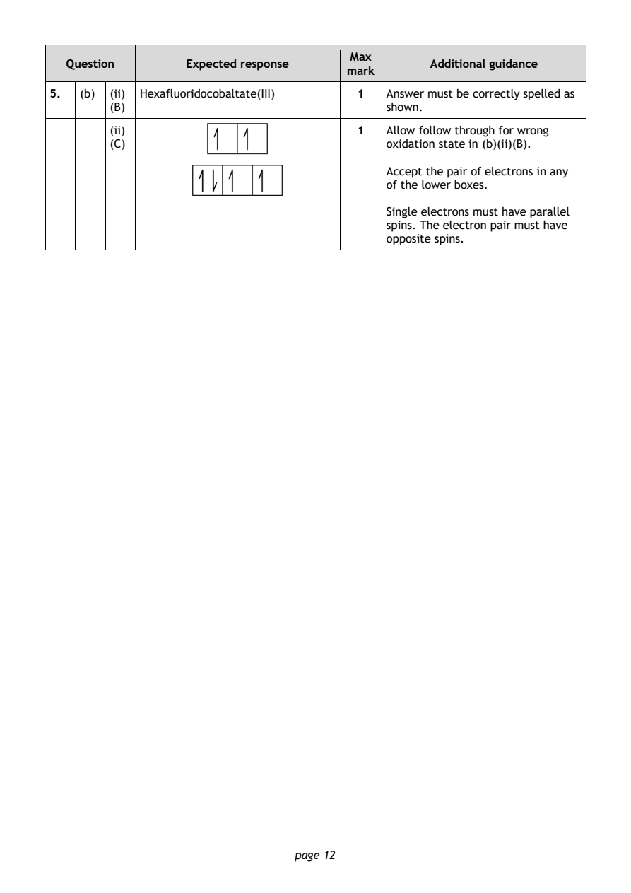
Selectable page text
Max
Question Expected response Additional guidance
mark
5. (b) (ii) Hexafluoridocobaltate(III) 1 Answer must be correctly spelled as
(B) shown.
(ii) 1 Allow follow through for wrong
(C) oxidation state in (b)(ii)(B).
Accept the pair of electrons in any
of the lower boxes.
Single electrons must have parallel
spins. The electron pair must have
opposite spins.
page 12PDF page 13
Paper 2, Question 6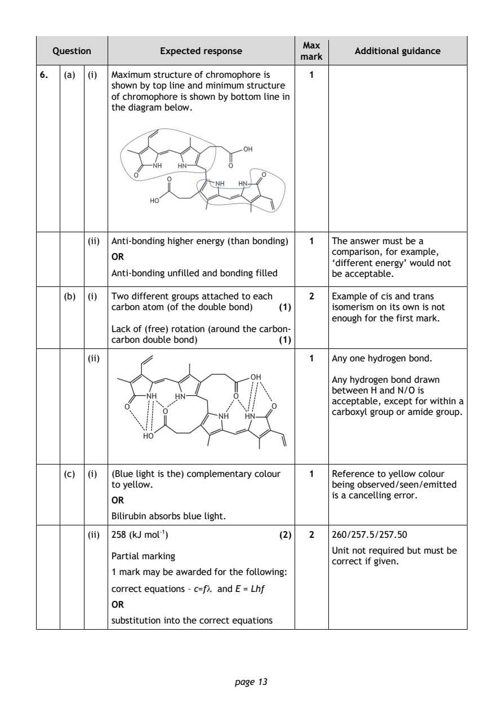
Selectable page text
Max
Question Expected response Additional guidance
mark
6. (a) (i) Maximum structure of chromophore is 1
shown by top line and minimum structure
of chromophore is shown by bottom line in
the diagram below.
(ii) Anti-bonding higher energy (than bonding) 1 The answer must be a
comparison, for example,
OR
‘different energy’ would not
Anti-bonding unfilled and bonding filled be acceptable.
(b) (i) Two different groups attached to each 2 Example of cis and trans
carbon atom (of the double bond) (1) isomerism on its own is not
enough for the first mark.
Lack of (free) rotation (around the carbon-
carbon double bond) (1)
(ii) 1 Any one hydrogen bond.
Any hydrogen bond drawn
between H and N/O is
acceptable, except for within a
carboxyl group or amide group.
(c) (i) (Blue light is the) complementary colour 1 Reference to yellow colour
to yellow. being observed/seen/emitted
is a cancelling error.
OR
Bilirubin absorbs blue light.
(ii) 258 (kJ mol⁻¹) (2) 2 260/257.5/257.50
Unit not required but must be
Partial marking
correct if given.
1 mark may be awarded for the following:
correct equations – c=fλ and E = Lhf
OR
substitution into the correct equations
page 13PDF page 14
Paper 2, Question 7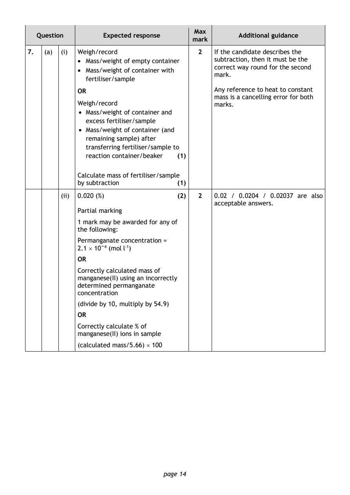
Selectable page text
Max
Question Expected response Additional guidance
mark
7. (a) (i) Weigh/record 2 If the candidate describes the
• Mass/weight of empty container subtraction, then it must be the
correct way round for the second
• Mass/weight of container with
mark.
fertiliser/sample
OR Any reference to heat to constant
mass is a cancelling error for both
Weigh/record marks.
• Mass/weight of container and
excess fertiliser/sample
• Mass/weight of container (and
remaining sample) after
transferring fertiliser/sample to
reaction container/beaker (1)
Calculate mass of fertiliser/sample
by subtraction (1)
(ii) 0.020 (%) (2) 2 0.02 / 0.0204 / 0.02037 are also
acceptable answers.
Partial marking
1 mark may be awarded for any of
the following:
Permanganate concentration =
2.1 × 10ˉ⁴ (mol l⁻¹)
OR
Correctly calculated mass of
manganese(II) using an incorrectly
determined permanganate
concentration
(divide by 10, multiply by 54.9)
OR
Correctly calculate % of
manganese(II) ions in sample
(calculated mass/5.66) × 100
page 14PDF page 15
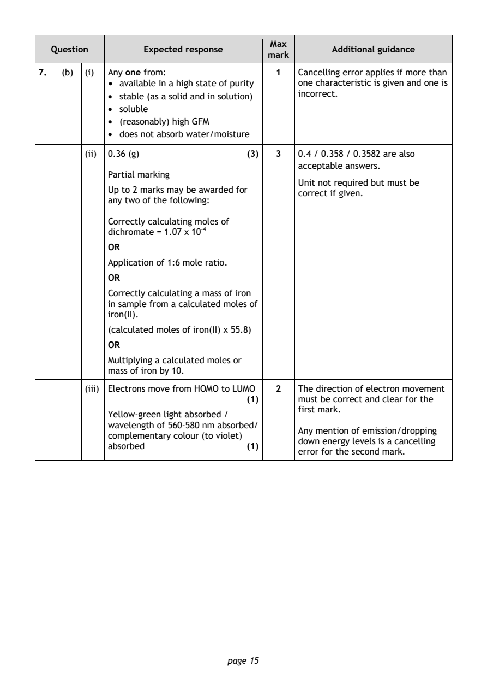
Selectable page text
Max
Question Expected response Additional guidance
mark
7. (b) (i) Any one from: 1 Cancelling error applies if more than
• available in a high state of purity one characteristic is given and one is
incorrect.
• stable (as a solid and in solution)
• soluble
• (reasonably) high GFM
• does not absorb water/moisture
(ii) 0.36 (g) (3) 3 0.4 / 0.358 / 0.3582 are also
acceptable answers.
Partial marking
Unit not required but must be
Up to 2 marks may be awarded for
correct if given.
any two of the following:
Correctly calculating moles of
dichromate = 1.07 x 10⁻⁴
OR
Application of 1:6 mole ratio.
OR
Correctly calculating a mass of iron
in sample from a calculated moles of
iron(II).
(calculated moles of iron(II) x 55.8)
OR
Multiplying a calculated moles or
mass of iron by 10.
(iii) Electrons move from HOMO to LUMO 2 The direction of electron movement
(1) must be correct and clear for the
first mark.
Yellow-green light absorbed /
wavelength of 560-580 nm absorbed/
Any mention of emission/dropping
complementary colour (to violet)
down energy levels is a cancelling
absorbed (1)
error for the second mark.
page 15PDF page 16
Paper 2, Question 8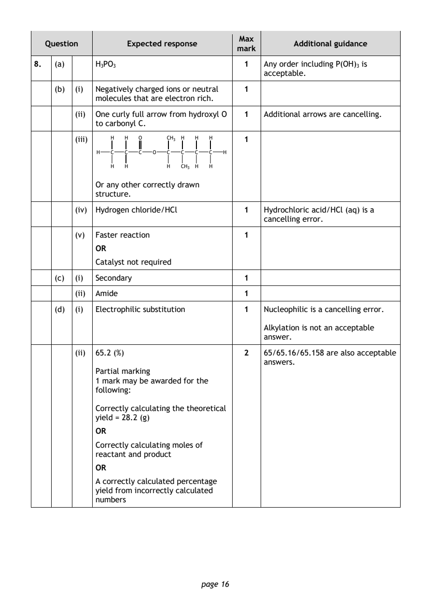
Selectable page text
Max
Question Expected response Additional guidance
mark
8. (a) H₃PO₃ 1 Any order including P(OH) is
3
acceptable.
(b) (i) Negatively charged ions or neutral 1
molecules that are electron rich.
(ii) One curly full arrow from hydroxyl O 1 Additional arrows are cancelling.
to carbonyl C.
(iii) H H O CH₃ H H H 1
H C C C O C C C C H
H H H CH₃ H H
Or any other correctly drawn
structure.
(iv) Hydrogen chloride/HCl 1 Hydrochloric acid/HCl (aq) is a
cancelling error.
(v) Faster reaction 1
OR
Catalyst not required
(c) (i) Secondary 1
(ii) Amide 1
(d) (i) Electrophilic substitution 1 Nucleophilic is a cancelling error.
Alkylation is not an acceptable
answer.
(ii) 65.2 (%) 2 65/65.16/65.158 are also acceptable
answers.
Partial marking
1 mark may be awarded for the
following:
Correctly calculating the theoretical
yield = 28.2 (g)
OR
Correctly calculating moles of
reactant and product
OR
A correctly calculated percentage
yield from incorrectly calculated
numbers
page 16PDF page 17
Paper 2, Question 9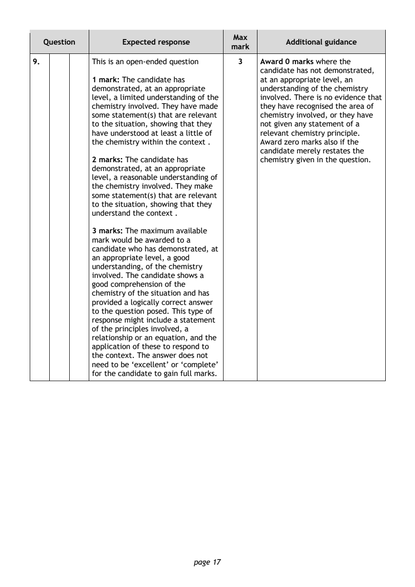
Selectable page text
Max
Question Expected response Additional guidance
mark
9. This is an open-ended question 3 Award 0 marks where the
candidate has not demonstrated,
1 mark: The candidate has at an appropriate level, an
demonstrated, at an appropriate understanding of the chemistry
level, a limited understanding of the involved. There is no evidence that
chemistry involved. They have made they have recognised the area of
some statement(s) that are relevant chemistry involved, or they have
to the situation, showing that they not given any statement of a
have understood at least a little of relevant chemistry principle.
the chemistry within the context . Award zero marks also if the
candidate merely restates the
2 marks: The candidate has chemistry given in the question.
demonstrated, at an appropriate
level, a reasonable understanding of
the chemistry involved. They make
some statement(s) that are relevant
to the situation, showing that they
understand the context .
3 marks: The maximum available
mark would be awarded to a
candidate who has demonstrated, at
an appropriate level, a good
understanding, of the chemistry
involved. The candidate shows a
good comprehension of the
chemistry of the situation and has
provided a logically correct answer
to the question posed. This type of
response might include a statement
of the principles involved, a
relationship or an equation, and the
application of these to respond to
the context. The answer does not
need to be ‘excellent’ or ‘complete’
for the candidate to gain full marks.
page 17PDF page 18
Paper 2, Question 10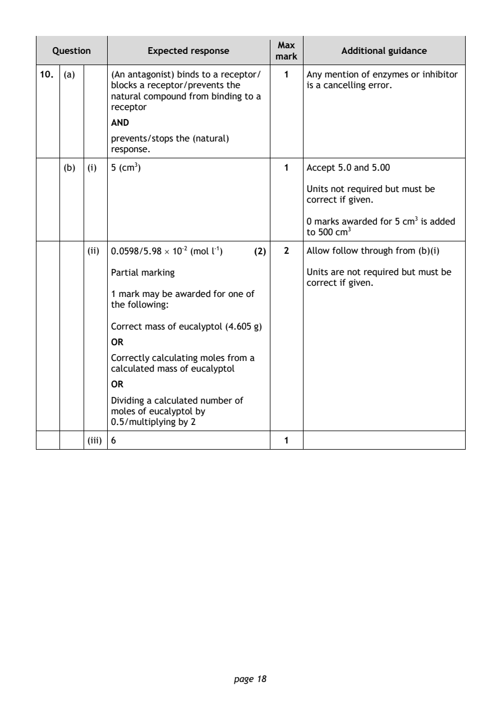
Selectable page text
Max
Question Expected response Additional guidance
mark
10. (a) (An antagonist) binds to a receptor/ 1 Any mention of enzymes or inhibitor
blocks a receptor/prevents the is a cancelling error.
natural compound from binding to a
receptor
AND
prevents/stops the (natural)
response.
(b) (i) 5 (cm³) 1 Accept 5.0 and 5.00
Units not required but must be
correct if given.
0 marks awarded for 5 cm³ is added
to 500 cm³
(ii) 0.0598/5.98 × 10⁻² (mol l⁻¹) (2) 2 Allow follow through from (b)(i)
N
Partial marking Units aSr e not required but must be
correctS if given.
1 mark may be awarded for one of 4
the following:
Correct mass of eucalyptol (4.605 g)
OR
Correctly calculating moles from a
calculated mass of eucalyptol
OR
Dividing a calculated number of
moles of eucalyptol by
0.5/multiplying by 2
(iii) 6 1
page 18PDF page 19
Paper 2, Question 11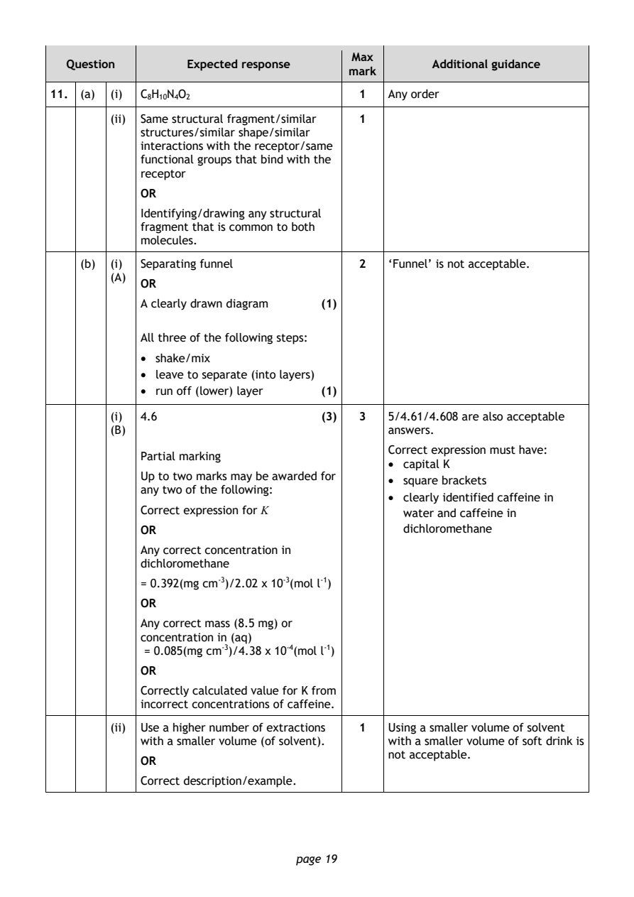
Selectable page text
Max
Question Expected response Additional guidance
mark
11. (a) (i) C₈H₁ N₄O₂ 1 Any order
0
(ii) Same structural fragment/similar 1
structures/similar shape/similar
interactions with the receptor/same
functional groups that bind with the
receptor
OR
Identifying/drawing any structural
fragment that is common to both
molecules.
(b) (i) Separating funnel 2 ‘Funnel’ is not acceptable.
(A)
OR
A clearly drawn diagram (1)
All three of the following steps:
• shake/mix
• leave to separate (into layers)
• run off (lower) layer (1)
(i) 4.6 (3) 3 5/4.61/4.608 are also acceptable
(B) answers.
Correct expression must have:
Partial marking
• capital K
Up to two marks may be awarded for
• square brackets
any two of the following:
• clearly identified caffeine in
Correct expression for K water and caffeine in
OR dichloromethane
Any correct concentration in
dichloromethane
= 0.392(mg cm⁻³)/2.02 x 10⁻³(mol l⁻¹)
OR
Any correct mass (8.5 mg) or
concentration in (aq)
= 0.085(mg cm⁻³)/4.38 x 10⁻⁴(mol l⁻¹)
OR
Correctly calculated value for K from
incorrect concentrations of caffeine.
(ii) Use a higher number of extractions 1 Using a smaller volume of solvent
with a smaller volume (of solvent). with a smaller volume of soft drink is
not acceptable.
OR
Correct description/example.
page 19PDF page 20
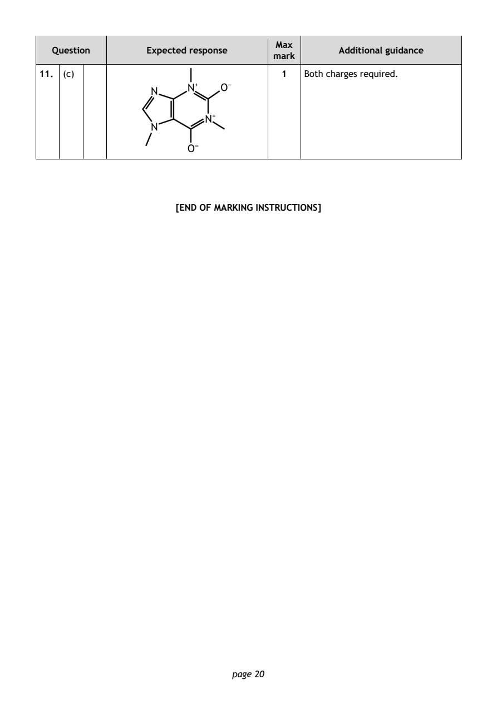
Selectable page text
Max
Question Expected response Additional guidance
mark
11. (c) 1 Both charges required.
[END OF MARKING INSTRUCTIONS]
page 20